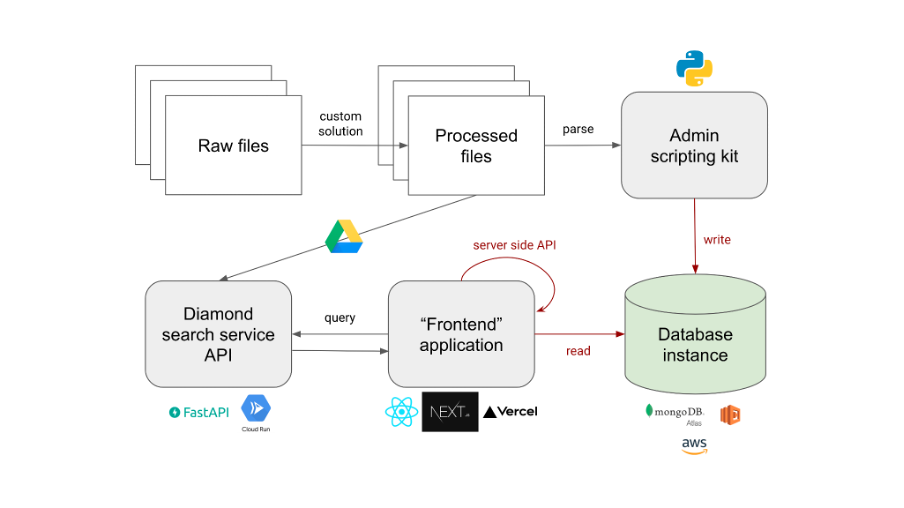

Kingdom-wide Gene Expression Omnibus
Welcome! This is the internal documentation site for the project, managed by Mutwil Lab.
This project aims to provide a kingdom-wide gene expression resource for all plants. The software components are broken up into several pieces and are summarised on this page. When components are found outside of this repository, links are given.

Frontend application
The frontend application (Plant Gene Expression Omnibus, PEO) is the interface for non-programmer biologists to interact with our resource.
Main technologies used:
- Next.js (React.js): Frontend framework used to handle routing, rendering and create basic API endpoints. Note that functional components + hooks are used. Do not use class components anymore, it is >2022. Avoid Redux, not a complexity that is needed for now.
- Tailwind CSS: CSS utility classes framework
- Mongoose: Async driver and ODM for accessing MongoDB database
- React Table (TanStack): Headless UI library for managing states for rendering tables
Notes for future work:
- TypeScript has been loosely annotated and could be further worked on in refactoring sprints in future.
- No tests has been written for the frontend codebase yet. Perhaps a ping test for every route could be considered next as the first level of test coverage.
- Avoid adding any jquery dependency if possible.
- Go for headless libraries where possible.
The frontend is deployed at Vercel, free-tier.
Database
MongoDB database is used for its flexibility in data modeling, and also to avoid expensive join operations on reads. More details can be found on the database schema page.
Deployed at MongoDB Atlas service, hosted on AWS. We are currently migrating the Atlas instance from serverless to managed cluster to reduce costs. Refer to Marek for access to the Atlas dashboard.
Backend API service
Deprecated
The backend API service has been deprecated in favor of directly accessing the database from the Next.js server-side application for reads, and directly writing via the Python-based uploader. This is because uploads took too long via the API and data validation and shaping could be done locally instead of on the cloud, given that only a single user (the resource admin) will be performing writes to the database.
Main technologies used:
- Python > 3.10: For the modern typehint syntax
- FastAPI (Python): Modern lightweight API framework, similar to Flask
- Pydantic: For data validation and settings management using Python type annotations
- Pytest: For writing and running tests
- Pymongo: Driver for MongoDB. Does not support asyncronous operations. Motor, the syncronous version is still problematic to use for now. An ODM - Beanie was tested but it did not make sense to use an ODM in our case.
Uploader
This docs is placed within the uploader repository.
Diamond sequence search API service
To enable users to identify their gene of interest through a protein sequence, a protein search tool is required. The tool should then be deplyed and provisioned to the user-facing application.
Choice of sequence search tool: Diamond
Diamond was chosen as the protein search tool to identify genes from given protein sequences, because of its speed 💨, low memory footprint 🐾 and comparable accuracy 🎯. Speed is essential in a user facing application, while laser accuracy makes less of a difference to user experience since the user will be choosing from the recommended search result anyway.
Data processing
Protein sequences from processed PEP files here. Note that one species (GOSAR, taxid 29729) does not have an available PEP file and is hence not searchable by protein sequence. The PEP files were used to build a diamond database, which is the reference target used when searching for an unknown protein sequence.
Availability
The API service is deployed on Google Cloud Run. Refer to Marek for access to the GCP project dashboard.